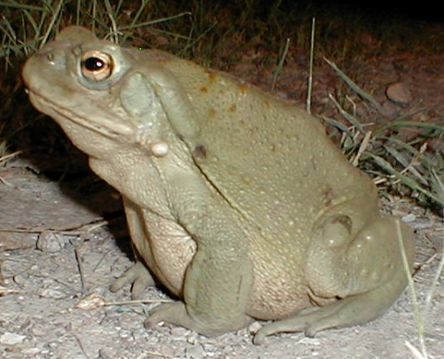

The
Sonoran Desert Toad
The
Sonoran Desert Toad
The
Sonoran Desert Toad
Bufo alvarius
Identity of a New World Psychoactive Toad
by Davis, Wade, and Andrew Weil
In Ancient Mesoamerica 1992 3 (1): 51-59.
And
Bufo alvarius: A Potent Hallucinogen of Animal Origin
by Davis, Wade, and Andrew
Weil
in Journal of Ethnopharmacology 1994 41 (1-2): 1-8.
Abstract:
Anthropologists have long speculated that ancient peoples of Mesoamerica used
a toad, Bufo marinus, as a ritual intoxicant. This hypothesis rests on many
iconographic and mythological representations of toads and on a number of
speculative ethnographic reports. The authors reject B. marinus as a candidate
for such use because of the toxicity of its venom. A more likely candidate is
the Sonoran desert toad, Bufo alvarius, which secretes large amounts of the
potent known hallucinogen, 5-methoxy-N,N-dimethyltryptamine (5-MeO-DMT). The
authors demonstrate that the venom of B. alvarius, although known to be toxic
when consumed orally, may be safely smoked and is powerfully psychoactive by
that route of administration. These experiments are the first documentation of
an hallucinogenic agent from the animal kingdom, and they provide clear evidence
of a psychoactive toad that could have been employed by Precolumbian peoples of
the New World.

Davis and Weil self-experiment with the venom and record their results:
Both of us had previously smoked synthetic 5-MeO-DMT and were familiar with its effects. When we burned the
venom we found the odor and taste of the smoke to resemble closely the very distinctive odor and taste of the
pure compound. We prepared for administration a small chip of dried venom, the size of a paper match head.
Within 15 seconds of a single deep inhalation of the vaporized material, both of us experienced pronounced
psychoactive effects. We recorded our impressions as follows:
In comparison to the pure compounds the toad venom appears longer lasting and, because one does not completely
lose contact with reality, far more pleasant, even sensual. Shortly after inhalation I experienced warm flushing
sensations, a sense of wonder and well-being, strong auditory hallucinations, which included an insect-cicada
sound that ran across my mind and seemed to link my body to the earth. Though I was indoors, there was a sense
of the feel of the earth, the dry desert soil passing through my fingers, the stars at midday, the scent of
cactus and sage, the feel of dry leaves through hands. Strong visual hallucinations in orblike brilliance,
diamond patterns that undulated across my visual field. The experience was in every sense pleasant, with no
disturbing physical symptoms, no nausea, perhaps a slight sense of increased heart rate. Warm waves coursed up
and down my body. The effects lasted only a few minutes but a pleasant afterglow continued for almost an hour.
(Wade Davis, personal observation, January 12, 1991)
Profound alteration of consciousness within a few seconds of exhaling. I relax into a deep, peaceful interior
awareness. There is nothing scary about the effects and no sense of toxicity. I try to describe my feeling but
am unable to talk for the first five minutes and then only with some difficultly. This is a powerful
psychoactive drug, one that I think would appeal to most people who like the effects of hallucinogens. For the
next hour I feel slow and velvety, with a slight pressure in my head. No long-lasting effects to report. (Andrew
T. Weil, personal observation, January 12, 1991)
We repeated the experiment with a sample of venom collected two years earlier in Gila County, Arizona. This
material had been kept in a closed vial at room temperature. It had darkened over time but was quite active.